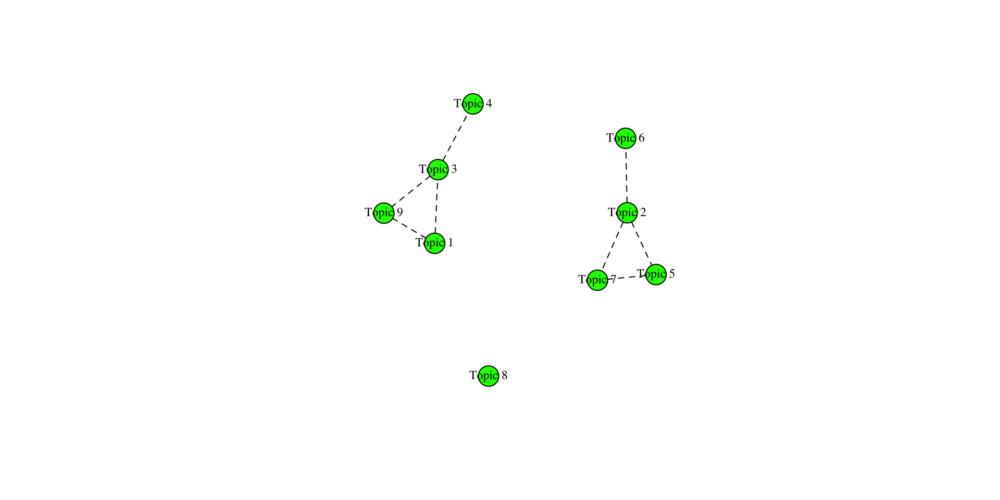

Intermediate techniques in text analysis with R
Overview of common text analysis techniques
Text classification and clustering
Classification and clustering both aim at partitioning textual data into classes, but the former does that using supervised learning methods and the latter via unsupervised learning methods.

The difference between supervised and unsupervised learning, illustrated by @Ciaraioch
Supervised learning algorithms perform text classification based on examples (such as textual data labeled by human coders) while unsupervised learning algorithms distinguish among classes based on the patterns detected in the data. Topic modeling is an example of unsupervised learning algorithm, which aims at partitioning the corpus based on patterns of co-occurrences between words.
Topic modeling
“The data-driven and computational nature of LDA makes it attractive for communication research because it allows for quickly and efficiently deriving the thematic structure of large amounts of text documents. It combines an inductive approach with quantitative measurements, making it particularly suitable for exploratory and descriptive analyses” 1
Topic modeling is one of the most popular unsupervised text analysis techniques in the social sciences. Literature provides critical reviews on the application of topic modeling1, and useful suggestions on the process to follow (e.g., the already cited Maier et al., 2018). The most popular approach to topic modeling is Latent Dirichlet Allocation (LDA), which categorizes text within a document into a specific topic. This approach is traced back to Blei, Ng, & Jordan (2003)2.

David M. Blei, “Introduction to Probabilistic Topic Models” (Figure 1)
The “latent” dimension in the Latent Dirichlet Allocation is the hidden structure of the document, which LDA aims to discover: “(…) the goal of topic modeling is to automatically discover the topics from a collection of documents. The documents themselves are observed, while the topic structure—the topics, per-document topic distributions, and the per-document per-word topic assignments—are hidden structure” 1
In a topic model, each document is considered a mixture of topics, and each topic is a mixture of words.
Topic modeling uses the observed documents to infer the hidden topic structure. While the statistical model is sophisticated, there are two important parameters in LDA which can be intuitively understood. They are also called hyperparameters and influence the shape and specificity of, respectively, topic distribution per document (\(\alpha\) parameter) and term distribution per topic (\(\beta\) parameter).
Higher values for \(\alpha\) lead to a balanced distribution of topics within a document. On the other hand, lower alpha prior values concentrate the probability mass on fewer topics for each document. Similarly, lower values for \(\beta\) lead to a balanced distribution of words within a topic. On the other hand, lower values concentrate the probability mass on fewer words for each topic. The hyperparameters alpha and beta can be estimated by the topic modeling packages automatically.
Moreover, the applied researcher needs to specify the number of topics prior to the analysis, which is usually not a trivial choice.
Introduction to R for topic modeling.
There are several different ways to perform topic modeling analysis in R. A widely used package is topicmodels.
Fit the model
The basic function to fit a topic model is LDA:
Topic 1 Topic 2 Topic 3 Topic 4 Topic 5
[1,] "citizenship" "people" "british" "system" "asylum"
[2,] "system" "make" "uk" "ensure" "much"
[3,] "student" "live" "immigrant" "non" "work"
[4,] "border" "eu" "illegal" "future" "country"
[5,] "new" "year" "government" "end" "seeker" Considering the output of the function LDA, the beta matrix includes the information about the distribution of terms by topics.
Topic per document
Information about the distribution of topics in each documents is in the matrix gamma.
# A tibble: 45 × 3
document topic gamma
<chr> <int> <dbl>
1 BNP 1 0.110
2 Coalition 1 0.206
3 Conservative 1 0.282
4 Greens 1 0.149
5 Labour 1 0.257
6 LibDem 1 0.203
7 PC 1 0.176
8 SNP 1 0.205
9 UKIP 1 0.145
10 BNP 2 0.164
# … with 35 more rowsYou may want to assign the most prevalent topic to each document in the corpus.
Visualize topics
Beyond plots of topic frequency, there are advanced and interactive options like those provided by LDAvis.
Hands-on tutorial
Click here to open the tutorial
Coffee Break
Advanced topics in topic modeling
Validation
Validation is a central problem for scientific analysis, particularly when based on unsupervised techniques. In particular topic models are sensitive at the initial choice of number of topics, hence, the validation of such a number is one of the principal goals of validation.
There are different methods in literature to validate a topic model. While these computational approaches can help identifying a proper model, human intersubjective interpretability remains the most important criterion.
Identify the number of topics
While the hyperparameters alpha and beta can be estimated by the topicmodels algorithm, the researchers need to indicate the number of topics. The choice can be informed by the previous knowledge of the researcher about the topic or/and supported by a data driven approach.
There are different algorithms for estimating the optimal number of topics. An approach is to fit several models and choosing the one with the maximum log-likelihood. The ldatuning package provides a function FindTopicsNumber that calculates different metrics to estimate the most preferable number of topics for LDA model.
Here, the Griffiths2004 approach is based on the log-likelihood maximization and it is described in the related paper. It is also the default approach of ldatuning. The Deveaud2014 is also a common choice.
Based on this indication, we can peraphs fit a model with about 15 topics.
Topic 1 Topic 2 Topic 3 Topic 4 Topic 5 Topic 6
[1,] "eu" "country" "right" "british" "year" "new"
[2,] "limit" "asylum" "ensure" "take" "asylum" "live"
[3,] "live" "support" "national" "asylum" "citizenship" "house"
[4,] "must" "must" "control" "illegal" "end" "ensure"
[5,] "priority" "high" "make" "seeker" "government" "country"
Topic 7 Topic 8 Topic 9 Topic 10 Topic 11 Topic 12
[1,] "immigrant" "work" "system" "can" "non" "uk"
[2,] "uk" "seeker" "border" "migrant" "national" "much"
[3,] "government" "citizen" "police" "government" "can" "people"
[4,] "country" "child" "agency" "live" "control" "british"
[5,] "must" "non" "high" "end" "asylum" "thousand"
Topic 13 Topic 14 Topic 15
[1,] "control" "people" "need"
[2,] "point" "border" "right"
[3,] "student" "illegal" "act"
[4,] "citizenship" "citizenship" "refugee"
[5,] "future" "give" "detention"Coherence and exclusivity
The package topicdoc provides diagnostic measures for topic models. They can be used to compare different models. Usually, models with a different number of topics are being compared.
A particularly useful and commonly-used metrics are semantic coherence and exclusivity. A good topic model should have coherent topics (i.e., about a single theme and not a mixture of different themes), which also are well distinguishable from each other, without overlaps (exclusivity).
Held-out likelihood (perplexity)
Perplexity is a metric for the accuracy of a probability model in predicting a sample and can be used as a measure of a topic model’s ability to predict new data. The lower the perplexity, the better the model.
Topic models with different number of topics can be compared based on perplexity using cross-validation. This involves dividing data into subsets (usually 5), and using one subset as the validation set while using the remaining as the training set. This ensures that each data point has an equal opportunity of being part of the validation and training sets.
[[1]]
[1] "topicmodels" "stats" "graphics" "grDevices" "utils"
[6] "datasets" "methods" "base"
[[2]]
[1] "topicmodels" "stats" "graphics" "grDevices" "utils"
[6] "datasets" "methods" "base"
[[3]]
[1] "topicmodels" "stats" "graphics" "grDevices" "utils"
[6] "datasets" "methods" "base"
[[4]]
[1] "topicmodels" "stats" "graphics" "grDevices" "utils"
[6] "datasets" "methods" "base"
[[5]]
[1] "topicmodels" "stats" "graphics" "grDevices" "utils"
[6] "datasets" "methods" "base"
[[6]]
[1] "topicmodels" "stats" "graphics" "grDevices" "utils"
[6] "datasets" "methods" "base"
[[7]]
[1] "topicmodels" "stats" "graphics" "grDevices" "utils"
[6] "datasets" "methods" "base" user system elapsed
0.017 0.001 3.774 Hands-on tutorial
Click here to open the tutorial
Lunch
Advanced topic modeling methods
Structural Topic Models
The Structural Topic Model is a general framework for topic modeling with document-level covariate information. The covariates can improve inference and qualitative interpretability and are allowed to affect topical prevalence, topical content, or both.
The R package stm implements the estimation algorithms for the model and also includes tools for every stage of a standard workflow, from reading in and processing raw text to making publication quality figures.

Roberts, M. E., Stewart, B. M., & Tingley, D. (2019). Stm: An R package for structural topic models. Journal of Statistical Software, 91, 1-40. Chicago
Preprocessing
After the usual pre-processing steps using Quanteda, the resulting Quanteda dfm can be transformed to an stm object, ready for prepDocuments to complete the preparation for the analysis.
Fit
The homonym function stm is used to fit the model. Note the covariate that has been added, namely Year, for which we are going to fit a smoothed (s) function. In this case, the prevalence of topics is allowed to vary over the years. Also, notice the Spectral initialization. This has been found an helpful method to estimate the model, whose results can otherwise be very sensitive to initialization.
inaug_stm_fit <- stm(documents = out$documents,
vocab = out$vocab,
data = out$meta,
K = 9,
prevalence = ~s(Year) + Party,
init.type = "Spectral")Beginning Spectral Initialization
Calculating the gram matrix...
Finding anchor words...
.........
Recovering initialization...
.
Initialization complete.
...........................................................
Completed E-Step (0 seconds).
Completed M-Step.
Completing Iteration 1 (approx. per word bound = -4.950)
...........................................................
Completed E-Step (0 seconds).
Completed M-Step.
Completing Iteration 2 (approx. per word bound = -4.931, relative change = 3.743e-03)
...........................................................
Completed E-Step (0 seconds).
Completed M-Step.
Completing Iteration 3 (approx. per word bound = -4.923, relative change = 1.589e-03)
...........................................................
Completed E-Step (0 seconds).
Completed M-Step.
Completing Iteration 4 (approx. per word bound = -4.919, relative change = 9.227e-04)
...........................................................
Completed E-Step (0 seconds).
Completed M-Step.
Completing Iteration 5 (approx. per word bound = -4.916, relative change = 6.218e-04)
Topic 1: shall, now, upon, oath, may
Topic 2: america, new, let, world, together
Topic 3: government, public, country, states, people
Topic 4: war, nation, year, without, every
Topic 5: thing, man, great, nation, see
Topic 6: freedom, nation, world, free, know
Topic 7: must, change, make, can, people
Topic 8: government, responsibility, people, can, peace
Topic 9: union, government, states, constitution, power
...........................................................
Completed E-Step (0 seconds).
Completed M-Step.
Completing Iteration 6 (approx. per word bound = -4.914, relative change = 4.598e-04)
...........................................................
Completed E-Step (0 seconds).
Completed M-Step.
Completing Iteration 7 (approx. per word bound = -4.912, relative change = 3.642e-04)
...........................................................
Completed E-Step (0 seconds).
Completed M-Step.
Completing Iteration 8 (approx. per word bound = -4.910, relative change = 3.031e-04)
...........................................................
Completed E-Step (0 seconds).
Completed M-Step.
Completing Iteration 9 (approx. per word bound = -4.909, relative change = 2.613e-04)
...........................................................
Completed E-Step (0 seconds).
Completed M-Step.
Completing Iteration 10 (approx. per word bound = -4.908, relative change = 2.314e-04)
Topic 1: shall, upon, now, people, oath
Topic 2: america, new, let, world, together
Topic 3: government, country, public, states, people
Topic 4: war, nation, year, force, united
Topic 5: thing, man, nation, great, see
Topic 6: freedom, nation, world, free, peace
Topic 7: must, change, make, can, people
Topic 8: government, responsibility, peace, people, can
Topic 9: union, government, power, states, constitution
...........................................................
Completed E-Step (0 seconds).
Completed M-Step.
Completing Iteration 11 (approx. per word bound = -4.907, relative change = 2.085e-04)
...........................................................
Completed E-Step (0 seconds).
Completed M-Step.
Completing Iteration 12 (approx. per word bound = -4.906, relative change = 1.898e-04)
...........................................................
Completed E-Step (0 seconds).
Completed M-Step.
Completing Iteration 13 (approx. per word bound = -4.905, relative change = 1.735e-04)
...........................................................
Completed E-Step (0 seconds).
Completed M-Step.
Completing Iteration 14 (approx. per word bound = -4.904, relative change = 1.569e-04)
...........................................................
Completed E-Step (0 seconds).
Completed M-Step.
Completing Iteration 15 (approx. per word bound = -4.904, relative change = 1.400e-04)
Topic 1: shall, upon, law, now, people
Topic 2: america, new, let, world, together
Topic 3: government, country, public, states, people
Topic 4: war, nation, force, year, united
Topic 5: thing, man, nation, see, great
Topic 6: freedom, nation, world, free, peace
Topic 7: must, change, can, make, people
Topic 8: government, responsibility, peace, can, must
Topic 9: union, government, power, states, constitution
...........................................................
Completed E-Step (0 seconds).
Completed M-Step.
Completing Iteration 16 (approx. per word bound = -4.903, relative change = 1.240e-04)
...........................................................
Completed E-Step (0 seconds).
Completed M-Step.
Completing Iteration 17 (approx. per word bound = -4.902, relative change = 1.090e-04)
...........................................................
Completed E-Step (0 seconds).
Completed M-Step.
Completing Iteration 18 (approx. per word bound = -4.902, relative change = 9.572e-05)
...........................................................
Completed E-Step (0 seconds).
Completed M-Step.
Completing Iteration 19 (approx. per word bound = -4.902, relative change = 8.464e-05)
...........................................................
Completed E-Step (0 seconds).
Completed M-Step.
Completing Iteration 20 (approx. per word bound = -4.901, relative change = 7.497e-05)
Topic 1: shall, upon, law, people, now
Topic 2: america, new, let, world, together
Topic 3: government, country, public, states, every
Topic 4: war, great, nation, force, united
Topic 5: thing, man, nation, life, see
Topic 6: freedom, nation, world, free, peace
Topic 7: must, change, can, make, one
Topic 8: government, responsibility, peace, world, can
Topic 9: union, government, power, states, constitution
...........................................................
Completed E-Step (0 seconds).
Completed M-Step.
Completing Iteration 21 (approx. per word bound = -4.901, relative change = 6.740e-05)
...........................................................
Completed E-Step (0 seconds).
Completed M-Step.
Completing Iteration 22 (approx. per word bound = -4.901, relative change = 6.082e-05)
...........................................................
Completed E-Step (0 seconds).
Completed M-Step.
Completing Iteration 23 (approx. per word bound = -4.900, relative change = 5.537e-05)
...........................................................
Completed E-Step (0 seconds).
Completed M-Step.
Completing Iteration 24 (approx. per word bound = -4.900, relative change = 5.088e-05)
...........................................................
Completed E-Step (0 seconds).
Completed M-Step.
Completing Iteration 25 (approx. per word bound = -4.900, relative change = 4.716e-05)
Topic 1: shall, upon, law, people, now
Topic 2: america, new, let, world, together
Topic 3: government, country, public, every, states
Topic 4: war, great, nation, make, force
Topic 5: thing, man, nation, life, see
Topic 6: freedom, nation, world, free, peace
Topic 7: must, change, can, make, one
Topic 8: government, responsibility, peace, world, must
Topic 9: union, government, power, constitution, states
...........................................................
Completed E-Step (0 seconds).
Completed M-Step.
Completing Iteration 26 (approx. per word bound = -4.900, relative change = 4.377e-05)
...........................................................
Completed E-Step (0 seconds).
Completed M-Step.
Completing Iteration 27 (approx. per word bound = -4.899, relative change = 4.053e-05)
...........................................................
Completed E-Step (0 seconds).
Completed M-Step.
Completing Iteration 28 (approx. per word bound = -4.899, relative change = 3.805e-05)
...........................................................
Completed E-Step (0 seconds).
Completed M-Step.
Completing Iteration 29 (approx. per word bound = -4.899, relative change = 3.559e-05)
...........................................................
Completed E-Step (0 seconds).
Completed M-Step.
Completing Iteration 30 (approx. per word bound = -4.899, relative change = 3.332e-05)
Topic 1: shall, upon, law, people, now
Topic 2: america, new, let, world, together
Topic 3: government, country, public, every, people
Topic 4: war, great, make, united, force
Topic 5: thing, man, nation, life, see
Topic 6: freedom, nation, world, free, peace
Topic 7: must, can, change, make, one
Topic 8: government, responsibility, peace, world, must
Topic 9: union, government, power, constitution, states
...........................................................
Completed E-Step (0 seconds).
Completed M-Step.
Completing Iteration 31 (approx. per word bound = -4.899, relative change = 3.070e-05)
...........................................................
Completed E-Step (0 seconds).
Completed M-Step.
Completing Iteration 32 (approx. per word bound = -4.899, relative change = 2.913e-05)
...........................................................
Completed E-Step (0 seconds).
Completed M-Step.
Completing Iteration 33 (approx. per word bound = -4.898, relative change = 2.750e-05)
...........................................................
Completed E-Step (0 seconds).
Completed M-Step.
Completing Iteration 34 (approx. per word bound = -4.898, relative change = 2.482e-05)
...........................................................
Completed E-Step (0 seconds).
Completed M-Step.
Completing Iteration 35 (approx. per word bound = -4.898, relative change = 2.375e-05)
Topic 1: upon, shall, law, people, now
Topic 2: america, new, let, world, together
Topic 3: government, country, public, every, people
Topic 4: war, great, make, united, force
Topic 5: thing, man, nation, life, see
Topic 6: freedom, nation, world, free, peace
Topic 7: must, can, change, make, one
Topic 8: government, responsibility, peace, world, must
Topic 9: union, government, power, constitution, states
...........................................................
Completed E-Step (0 seconds).
Completed M-Step.
Completing Iteration 36 (approx. per word bound = -4.898, relative change = 2.209e-05)
...........................................................
Completed E-Step (0 seconds).
Completed M-Step.
Completing Iteration 37 (approx. per word bound = -4.898, relative change = 2.085e-05)
...........................................................
Completed E-Step (0 seconds).
Completed M-Step.
Completing Iteration 38 (approx. per word bound = -4.898, relative change = 1.944e-05)
...........................................................
Completed E-Step (0 seconds).
Completed M-Step.
Completing Iteration 39 (approx. per word bound = -4.898, relative change = 1.834e-05)
...........................................................
Completed E-Step (0 seconds).
Completed M-Step.
Completing Iteration 40 (approx. per word bound = -4.898, relative change = 1.731e-05)
Topic 1: upon, shall, law, people, now
Topic 2: america, new, let, world, time
Topic 3: country, government, public, every, people
Topic 4: war, great, make, united, force
Topic 5: thing, man, nation, life, see
Topic 6: freedom, nation, world, free, peace
Topic 7: must, can, change, make, one
Topic 8: government, responsibility, peace, world, must
Topic 9: union, government, power, constitution, states
...........................................................
Completed E-Step (0 seconds).
Completed M-Step.
Completing Iteration 41 (approx. per word bound = -4.898, relative change = 1.691e-05)
...........................................................
Completed E-Step (0 seconds).
Completed M-Step.
Completing Iteration 42 (approx. per word bound = -4.898, relative change = 1.544e-05)
...........................................................
Completed E-Step (0 seconds).
Completed M-Step.
Completing Iteration 43 (approx. per word bound = -4.898, relative change = 1.528e-05)
...........................................................
Completed E-Step (0 seconds).
Completed M-Step.
Completing Iteration 44 (approx. per word bound = -4.897, relative change = 1.478e-05)
...........................................................
Completed E-Step (0 seconds).
Completed M-Step.
Completing Iteration 45 (approx. per word bound = -4.897, relative change = 1.420e-05)
Topic 1: upon, shall, law, people, now
Topic 2: america, new, let, world, time
Topic 3: country, government, public, every, citizen
Topic 4: war, great, make, united, force
Topic 5: thing, man, nation, life, see
Topic 6: freedom, nation, world, free, peace
Topic 7: must, can, change, make, one
Topic 8: government, responsibility, world, peace, must
Topic 9: union, government, power, constitution, states
...........................................................
Completed E-Step (0 seconds).
Completed M-Step.
Completing Iteration 46 (approx. per word bound = -4.897, relative change = 1.339e-05)
...........................................................
Completed E-Step (0 seconds).
Completed M-Step.
Completing Iteration 47 (approx. per word bound = -4.897, relative change = 1.321e-05)
...........................................................
Completed E-Step (0 seconds).
Completed M-Step.
Completing Iteration 48 (approx. per word bound = -4.897, relative change = 1.250e-05)
...........................................................
Completed E-Step (0 seconds).
Completed M-Step.
Completing Iteration 49 (approx. per word bound = -4.897, relative change = 1.256e-05)
...........................................................
Completed E-Step (0 seconds).
Completed M-Step.
Completing Iteration 50 (approx. per word bound = -4.897, relative change = 1.215e-05)
Topic 1: upon, law, shall, people, now
Topic 2: america, new, let, world, time
Topic 3: country, government, public, every, citizen
Topic 4: war, great, make, united, force
Topic 5: thing, man, nation, life, see
Topic 6: freedom, nation, world, free, peace
Topic 7: must, can, change, make, one
Topic 8: government, responsibility, world, peace, must
Topic 9: union, government, power, constitution, states
...........................................................
Completed E-Step (0 seconds).
Completed M-Step.
Completing Iteration 51 (approx. per word bound = -4.897, relative change = 1.187e-05)
...........................................................
Completed E-Step (0 seconds).
Completed M-Step.
Completing Iteration 52 (approx. per word bound = -4.897, relative change = 1.154e-05)
...........................................................
Completed E-Step (0 seconds).
Completed M-Step.
Completing Iteration 53 (approx. per word bound = -4.897, relative change = 1.121e-05)
...........................................................
Completed E-Step (0 seconds).
Completed M-Step.
Completing Iteration 54 (approx. per word bound = -4.897, relative change = 1.097e-05)
...........................................................
Completed E-Step (0 seconds).
Completed M-Step.
Completing Iteration 55 (approx. per word bound = -4.897, relative change = 1.057e-05)
Topic 1: upon, law, shall, people, now
Topic 2: america, new, let, world, time
Topic 3: country, government, public, every, citizen
Topic 4: war, great, make, united, force
Topic 5: thing, man, nation, life, see
Topic 6: freedom, nation, world, free, peace
Topic 7: must, can, change, make, one
Topic 8: government, responsibility, world, peace, must
Topic 9: union, government, power, constitution, states
...........................................................
Completed E-Step (0 seconds).
Completed M-Step.
Completing Iteration 56 (approx. per word bound = -4.897, relative change = 1.017e-05)
...........................................................
Completed E-Step (0 seconds).
Completed M-Step.
Model Converged Estimate effects
It is then possible to analyze the results. In this case, by checking the variation in topic prevalence over time, and by party.
Estimates
The result can be read as a regression model.
Call:
estimateEffect(formula = 1:9 ~ s(Year) + Party, stmobj = inaug_stm_fit,
metadata = out$meta, uncertainty = "Global")
Topic 1:
Coefficients:
Estimate Std. Error t value Pr(>|t|)
(Intercept) -0.661881 0.302420 -2.189 0.03410 *
s(Year)1 0.978008 0.351654 2.781 0.00801 **
s(Year)2 0.633937 0.295910 2.142 0.03787 *
s(Year)3 0.753505 0.354868 2.123 0.03952 *
s(Year)4 1.105695 0.300672 3.677 0.00065 ***
s(Year)5 0.877957 0.324404 2.706 0.00972 **
s(Year)6 0.660886 0.308145 2.145 0.03767 *
s(Year)7 0.756839 0.314526 2.406 0.02049 *
s(Year)8 0.603701 0.314564 1.919 0.06162 .
s(Year)9 0.755753 0.319002 2.369 0.02239 *
s(Year)10 0.690899 0.312087 2.214 0.03220 *
PartyDemocratic-Republican -0.054657 0.108189 -0.505 0.61600
PartyFederalist 0.108672 0.169080 0.643 0.52382
Partynone 0.788676 0.268951 2.932 0.00537 **
PartyRepublican -0.002383 0.029191 -0.082 0.93530
PartyWhig 0.035037 0.083934 0.417 0.67844
---
Signif. codes: 0 '***' 0.001 '**' 0.01 '*' 0.05 '.' 0.1 ' ' 1
Topic 2:
Coefficients:
Estimate Std. Error t value Pr(>|t|)
(Intercept) 0.113578 0.283845 0.400 0.6910
s(Year)1 -0.095490 0.324236 -0.295 0.7698
s(Year)2 -0.097854 0.284407 -0.344 0.7325
s(Year)3 -0.081829 0.323465 -0.253 0.8015
s(Year)4 -0.071446 0.289621 -0.247 0.8063
s(Year)5 -0.053656 0.299303 -0.179 0.8586
s(Year)6 -0.028588 0.293359 -0.097 0.9228
s(Year)7 0.064914 0.306504 0.212 0.8333
s(Year)8 0.685879 0.311253 2.204 0.0330 *
s(Year)9 -0.023701 0.321354 -0.074 0.9415
s(Year)10 0.577992 0.308663 1.873 0.0679 .
PartyDemocratic-Republican -0.003615 0.106731 -0.034 0.9731
PartyFederalist -0.021797 0.171293 -0.127 0.8993
Partynone -0.066570 0.242365 -0.275 0.7849
PartyRepublican -0.045093 0.033333 -1.353 0.1832
PartyWhig -0.025942 0.068400 -0.379 0.7064
---
Signif. codes: 0 '***' 0.001 '**' 0.01 '*' 0.05 '.' 0.1 ' ' 1
Topic 3:
Coefficients:
Estimate Std. Error t value Pr(>|t|)
(Intercept) 0.98873 0.47753 2.071 0.0444 *
s(Year)1 -0.55172 0.52436 -1.052 0.2986
s(Year)2 -0.10272 0.50202 -0.205 0.8388
s(Year)3 -0.98716 0.52445 -1.882 0.0666 .
s(Year)4 -0.57086 0.49221 -1.160 0.2525
s(Year)5 -0.81097 0.49254 -1.647 0.1069
s(Year)6 -0.92338 0.48962 -1.886 0.0661 .
s(Year)7 -0.95770 0.48978 -1.955 0.0571 .
s(Year)8 -0.93589 0.49269 -1.900 0.0642 .
s(Year)9 -0.82508 0.50813 -1.624 0.1117
s(Year)10 -0.92372 0.49077 -1.882 0.0666 .
PartyDemocratic-Republican -0.21416 0.17302 -1.238 0.2225
PartyFederalist -0.13302 0.28298 -0.470 0.6407
Partynone -0.48125 0.41564 -1.158 0.2533
PartyRepublican -0.04278 0.04126 -1.037 0.3056
PartyWhig 0.04608 0.11177 0.412 0.6822
---
Signif. codes: 0 '***' 0.001 '**' 0.01 '*' 0.05 '.' 0.1 ' ' 1
Topic 4:
Coefficients:
Estimate Std. Error t value Pr(>|t|)
(Intercept) -0.43205 0.30186 -1.431 0.1596
s(Year)1 0.11657 0.34676 0.336 0.7384
s(Year)2 0.51665 0.30675 1.684 0.0994 .
s(Year)3 0.47454 0.34476 1.376 0.1758
s(Year)4 0.56181 0.30881 1.819 0.0758 .
s(Year)5 0.44641 0.32230 1.385 0.1732
s(Year)6 0.47972 0.30911 1.552 0.1280
s(Year)7 0.47386 0.31636 1.498 0.1415
s(Year)8 0.46151 0.31789 1.452 0.1538
s(Year)9 0.41585 0.32012 1.299 0.2008
s(Year)10 0.50350 0.31449 1.601 0.1167
PartyDemocratic-Republican 0.32326 0.12484 2.589 0.0131 *
PartyFederalist 0.33438 0.19339 1.729 0.0910 .
Partynone 0.42748 0.26341 1.623 0.1119
PartyRepublican 0.02626 0.02993 0.877 0.3852
PartyWhig -0.03562 0.07423 -0.480 0.6338
---
Signif. codes: 0 '***' 0.001 '**' 0.01 '*' 0.05 '.' 0.1 ' ' 1
Topic 5:
Coefficients:
Estimate Std. Error t value Pr(>|t|)
(Intercept) 0.38840 0.50536 0.769 0.446
s(Year)1 -0.13454 0.56836 -0.237 0.814
s(Year)2 -0.54616 0.50397 -1.084 0.285
s(Year)3 -0.10560 0.57436 -0.184 0.855
s(Year)4 -0.43913 0.51185 -0.858 0.396
s(Year)5 -0.04195 0.54603 -0.077 0.939
s(Year)6 -0.07357 0.51497 -0.143 0.887
s(Year)7 -0.31875 0.52723 -0.605 0.549
s(Year)8 -0.20559 0.53322 -0.386 0.702
s(Year)9 -0.31405 0.53728 -0.585 0.562
s(Year)10 -0.27833 0.52329 -0.532 0.598
PartyDemocratic-Republican -0.01844 0.17860 -0.103 0.918
PartyFederalist -0.19552 0.30143 -0.649 0.520
Partynone -0.31292 0.43275 -0.723 0.474
PartyRepublican -0.06932 0.05190 -1.336 0.189
PartyWhig -0.11619 0.12266 -0.947 0.349
Topic 6:
Coefficients:
Estimate Std. Error t value Pr(>|t|)
(Intercept) 0.1629962 0.4174056 0.390 0.698
s(Year)1 0.0006456 0.4706047 0.001 0.999
s(Year)2 -0.2136469 0.4213549 -0.507 0.615
s(Year)3 -0.0902374 0.4739489 -0.190 0.850
s(Year)4 -0.2029093 0.4267755 -0.475 0.637
s(Year)5 -0.1753492 0.4417788 -0.397 0.693
s(Year)6 -0.0968950 0.4281107 -0.226 0.822
s(Year)7 0.4700839 0.4446625 1.057 0.296
s(Year)8 -0.5850955 0.4458389 -1.312 0.196
s(Year)9 0.4822240 0.4555126 1.059 0.296
s(Year)10 -0.2573301 0.4355089 -0.591 0.558
PartyDemocratic-Republican 0.0103233 0.1541873 0.067 0.947
PartyFederalist -0.0908995 0.2523813 -0.360 0.720
Partynone -0.1472362 0.3591766 -0.410 0.684
PartyRepublican 0.0558350 0.0476748 1.171 0.248
PartyWhig -0.0022079 0.1014955 -0.022 0.983
Topic 7:
Coefficients:
Estimate Std. Error t value Pr(>|t|)
(Intercept) 0.134017 0.340641 0.393 0.696
s(Year)1 -0.070751 0.389452 -0.182 0.857
s(Year)2 -0.136648 0.342038 -0.400 0.691
s(Year)3 -0.031951 0.386844 -0.083 0.935
s(Year)4 -0.094525 0.351273 -0.269 0.789
s(Year)5 -0.010184 0.358870 -0.028 0.977
s(Year)6 0.076377 0.355779 0.215 0.831
s(Year)7 -0.080610 0.356536 -0.226 0.822
s(Year)8 0.046331 0.363531 0.127 0.899
s(Year)9 -0.068523 0.368247 -0.186 0.853
s(Year)10 -0.075438 0.351689 -0.215 0.831
PartyDemocratic-Republican -0.007512 0.125868 -0.060 0.953
PartyFederalist -0.077140 0.199998 -0.386 0.702
Partynone -0.060917 0.289409 -0.210 0.834
PartyRepublican -0.012667 0.038732 -0.327 0.745
PartyWhig -0.053761 0.080350 -0.669 0.507
Topic 8:
Coefficients:
Estimate Std. Error t value Pr(>|t|)
(Intercept) 0.019620 0.373180 0.053 0.9583
s(Year)1 0.015672 0.425594 0.037 0.9708
s(Year)2 0.050291 0.370022 0.136 0.8925
s(Year)3 0.026195 0.427150 0.061 0.9514
s(Year)4 -0.097302 0.381677 -0.255 0.8000
s(Year)5 0.077078 0.398107 0.194 0.8474
s(Year)6 0.193867 0.385278 0.503 0.6174
s(Year)7 -0.135933 0.391754 -0.347 0.7303
s(Year)8 0.160274 0.397212 0.403 0.6886
s(Year)9 -0.138903 0.397142 -0.350 0.7282
s(Year)10 0.011105 0.385757 0.029 0.9772
PartyDemocratic-Republican -0.018849 0.138121 -0.136 0.8921
PartyFederalist 0.122748 0.236520 0.519 0.6064
Partynone -0.006144 0.318697 -0.019 0.9847
PartyRepublican 0.081901 0.039952 2.050 0.0465 *
PartyWhig 0.018425 0.090722 0.203 0.8400
---
Signif. codes: 0 '***' 0.001 '**' 0.01 '*' 0.05 '.' 0.1 ' ' 1
Topic 9:
Coefficients:
Estimate Std. Error t value Pr(>|t|)
(Intercept) 0.288559 0.366341 0.788 0.435
s(Year)1 -0.258888 0.417939 -0.619 0.539
s(Year)2 -0.109789 0.377092 -0.291 0.772
s(Year)3 0.051278 0.441225 0.116 0.908
s(Year)4 -0.198984 0.366609 -0.543 0.590
s(Year)5 -0.305198 0.385788 -0.791 0.433
s(Year)6 -0.291369 0.372133 -0.783 0.438
s(Year)7 -0.274882 0.378895 -0.725 0.472
s(Year)8 -0.229066 0.384830 -0.595 0.555
s(Year)9 -0.288199 0.384331 -0.750 0.457
s(Year)10 -0.247717 0.376364 -0.658 0.514
PartyDemocratic-Republican -0.016646 0.145280 -0.115 0.909
PartyFederalist -0.051522 0.221269 -0.233 0.817
Partynone -0.142588 0.308716 -0.462 0.647
PartyRepublican 0.006429 0.032529 0.198 0.844
PartyWhig 0.127235 0.102002 1.247 0.219Interpretation
We can extract the most representative words per topic, and also extract representative quotes from the text.
Topic 8 Top Words:
Highest Prob: government, responsibility, world, peace, must, can, law
FREX: responsibility, home, peace, world, system, progress, policy
Lift: responsibility, home, system, progress, concern, republic, peace
Score: responsibility, america, world, system, policy, government, upon The interpretation can be supported by considering the relationships between topics.
Determine the number of topics
There is not a “right” answer to the number of topics that are appropriate for a given corpus, but the function searchK uses a data-driven approach to selecting the number of topics. The function will perform several automated tests to help choose the number of topics.
The held-out likelihood is similar to cross-validation, when some of the data is removed from estimation and then later used for validation. It helps the user assess the model’s prediction performance. The higher, the better.
If Residuals are overdispersed, it could be that more topics are needed to soak up some of the extra variance. The lower, the better.
Semantic coherence correlates well with human judgment of topic quality. The higher, the better. It is best read along with Exclusivity. Indeed, the authors found that semantic coherence alone is relatively easy to achieve by having only a couple of topics which all are dominated by the most common words. Thus we also proposed an exclusivity measure,
$results
K exclus semcoh heldout residual bound lbound em.its
1 5 8.981956 -10.27136 -5.01575 1.632753 -116485.3 -116480.5 112
2 10 9.246912 -11.55745 -5.017489 1.718216 -115476.5 -115461.4 81
3 15 9.293217 -12.0283 -5.03527 4.227064 -115102.7 -115074.8 94
4 20 9.383999 -13.13725 -4.989442 7.112873 -114741.5 -114699.2 123
$call
searchK(documents = out$documents, vocab = out$vocab, K = c(5,
10, 15, 20), init.type = "Spectral", prevalence = ~s(Year) +
Party, data = out$meta, verbose = FALSE)
attr(,"class")
[1] "searchK"Hands-on tutorial
Click here to open the tutorial
Seeded Topic Models
Seeded LDA (…) is a variant of the standard LDA approach (see Lu et al. 2011). While standard LDA does not assume the topics to be found a priori, seeded LDA exploits a limited number of words, defined as “seed words,” to weigh the prior distribution of topics (identified ex-ante by the researcher according to theoretical considerations) before fitting the model. For this reason, this method is called “semi-supervised.”1
As a result, seeded models such as seeded LDA stand in the middle between dictionary analysis and unsupervised topic models, presenting advantages with respect to both of them. In comparison with dictionary analysis, they do not require the researcher to compile a long and inevitably debatable list of keywords from scratch1.
Unlike unsupervised topic models, in which the estimated topics are unlabeled, so that it is up to the researcher to assign these labels by interpreting the content of words most closely associated with each topic (Benoit 2020), a semi-supervised model like seeded LDA is expected to produce results more solid in terms of validity and consistency with the theoretical framework, thanks to the use of the seed words1.
We first need to provide a small dictionary of keywords (seed words) to define the desired topics. Focusing on the example of extracts from the election manifestos of 9 UK political parties from 2010, related to immigration or asylum-seekers, we might be interested in analyzing a securitarian and an humanitarian frame.
Dictionary object with 2 key entries.
- [securitarian]:
- control, border, police, detention, illegal, legal
- [humanitarian]:
- asylum, child, seeker, refugee, human, rightMany of the top terms are seed words but related topic words are also identified.
The topic “other” is a “junk” topic.
securitarian humanitarian other
[1,] "border" "asylum" "system"
[2,] "control" "british" "people"
[3,] "country" "right" "new"
[4,] "illegal" "immigrant" "can"
[5,] "work" "much" "ensure"
[6,] "police" "seeker" "citizenship"
[7,] "eu" "year" "need"
[8,] "detention" "uk" "end"
[9,] "government" "child" "make"
[10,] "student" "people" "migrant"
[11,] "uk" "refugee" "point"
[12,] "national" "act" "agency"
[13,] "must" "take" "house"
[14,] "live" "allow" "high"
[15,] "non" "national" "support"
[16,] "citizen" "benefit" "british"
[17,] "limit" "arrive" "give"
[18,] "ensure" "citizenship" "thousand"
[19,] "future" "high" "economy"
[20,] "economic" "work" "priority"
securitarian humanitarian other
3 4 2 Hands-on tutorial
Click here to open the tutorial
Other Topic Modeling methods
Biterm topic modelling
The Biterm Topic Models has been introduced by Yan et al (2013)1 to overcome problems arising from the application of standard topic modeling to short texts such as Tweets.
(…) directly applying conventional topic models (e.g. LDA and PLSA) on such short texts may not work well. The fundamental reason lies in that conventional topic models implicitly capture the document-level word co-occurrence patterns to reveal topics, and thus suffer from the severe data sparsity in short documents.
Specifically, in BTM we learn the topics by directly modeling the generation of word co-occurrence patterns (i.e. biterms) in the whole corpus. […] The results demonstrate that our approach can discover more prominent and coherent topics, and significantly outperform baseline methods on several evaluation metrics. Furthermore, we find that BTM can outperform LDA even on normal texts, showing the potential generality and wider usage of the new topic model. (Yan et al., 2013)
BTM in R
The R package BTM can be used to fit biterm topic models and find topics in short texts (example).
Topic Modeling in Embedding Spaces
Embedded Topic Modeling (ETM) is a topic modeling method recently developed by Dieng, Ruiz, and Blei (2020)1 to overcoming some flawless of classic topic models. The authors explain that:
(…) embedded topic model (etm), [is] a generative model of documents that marries traditional topic models with word embeddings. […] The etm discovers interpretable topics even with large vocabularies that include rare words and stop words. It outperforms existing document models (…) in terms of both topic quality and predictive performance.
Hands-on tutorial
Click here to open the tutorial
Coffee Break
Laboratory with real-world data
Click here to open the tutorial